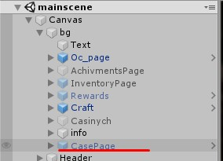
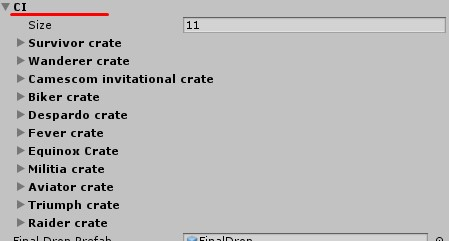
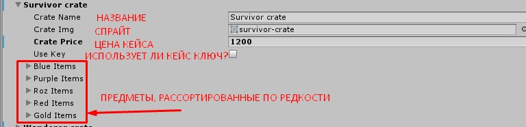
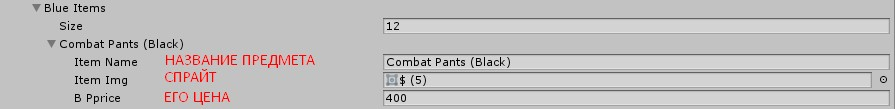
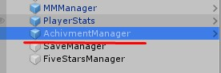
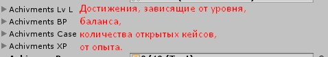
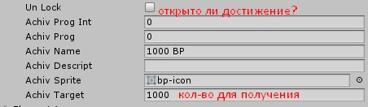

Как настроить кейсы?
Кейсы можно настроить в объекте CasePage (путь в иерархии Convas->bg->CasePage)

Список кейсов для редактировния находится в массиве CI



Как настроить ачивки?
В иерархии есть AchievmentManager, в котором есть разные массивы из ачивок, разделенные по категориям.


Настройка самой ачивки
